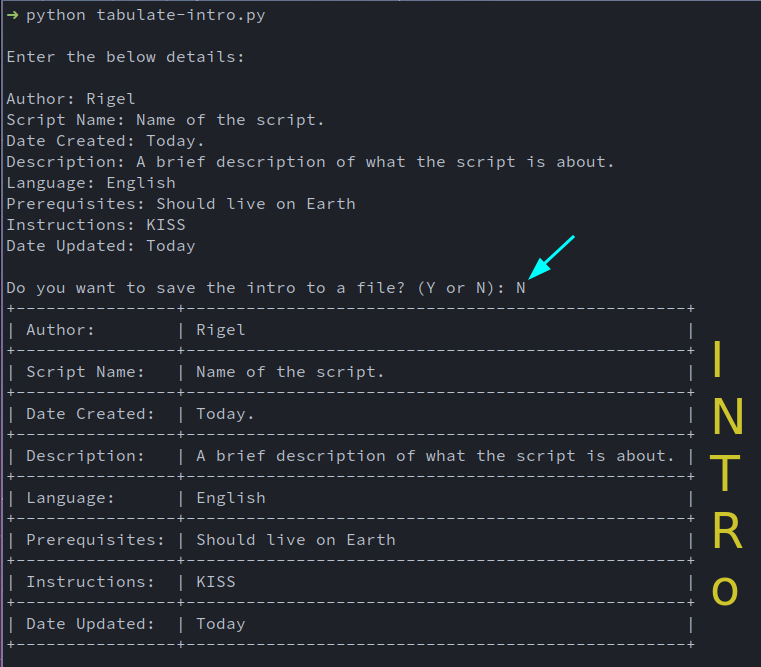

GITHUB REPO INFO
Table of Contents
| HOME |
Hello, from cosmolabs!!! A place where you explore your self!!
ABOUT
Every one knows GitHub, a hub for beautiful, wonderful, useful … etc. projects which are mostly open source. The GitHub UI does a pretty good job in showing the repository information of a specific user, but if you want a specif details about the repositories in some of your use cases lets say for more than one user, it difficult fetching through each user page to gather required data. That’s where the GitHub api comes for the rescue.
Using GitHub rest api you can call github and you can retrive the data you need. To make this call and format the data that’s retrived I created this python script and I am calling this script as github user info.
WHERE IS THE SCRIPT?
The script hosted at githubpage under a GNU GPL V3.0 license.
ANY PREREQUISITES OR DEPENDENCIES?
As it’s a python script the python software is obvious. Two external modules were used in this script one is tabulate and the other is requests. Tabulate module is for framing the data into a neat table format and requests module is for making the api call to GitHub. These 2 modules should be installed explicitly before running the user info script.
The requirements file is available with in the repo and a simple pip3 -r requirements.txt will do the trick of installing the dependencies into the system.
WHAT’S IN THE SCRIPT?
The script consists of functions each has it’s own functionality and some useful tricks in python which comes in handy for moderate pythonists.
IMPORTS
from os import path as io # importing tabulate module from lib folder from lib.tabulate import tabulate
- The first line shows the import of “path” from an inbuilt python module “os” as “io”. It’s useful in r/w file operations.
- The second line shows the import of a module tabulate(More info about tabulate in pypi:tabulate). The module is available in lib folder and to import it I used the format [folder].[moduleName]
TABULATE
def tabulate_intro_details(intro_details): return tabulate(intro_details, tablefmt="grid", colalign=("left",))
- A function that takes the intro details as a list and formats it into a table using the imported module tabulate.
- tabulate is having multiple formats you can choose from, but here it was choosen as “grid” (table will be in the grid format). One of my future enhancements includes providing an option to the user to chose from the different viewing foramts available
- colalign specifies how the data should align inside the table.
INTRO INTO FILE
def add_contents_to_a_file(contents_to_be_added, file_path): if io.exists(file_path) and io.isfile(file_path): with open(file_path, "r") as file: existing_file_content = file.readlines() existing_file_content.insert(0, contents_to_be_added) with open(file_path, "w") as intro_file: intro_file_content = "".join(existing_file_content) intro_file.write(intro_file_content) print("\nAdded intro to the file!!") elif io.isdir(file_path): print("\nEntered path is not a valid file. No intro !!") else: create_file = input("\nFile doesn't exists. Do you want to create a new file (Y or N)?: ") if create_file.upper() == "Y": with open(file_path, "w+") as intro_file: intro_file.write(contents_to_be_added) print("\nAdded intro to the file!!") else: print("\nNo intro!!")
- A function that adds contents to the file in the given file path.
- if file path exists then an intro will be added in the begining of the file and the contents of the file will stay intact.
- To acheive this functionality the follwing logic was followed
- First, grab the contents of the file and store it into a variable.
- Next, insert the intro in the begining (0th position) of the variable where we grabbed the existing file content. (which creates a list. Using “”.join converts the list back into the string.)
- Finally, overwrite the file contents with the latest variable data which holds our intro as well as the existing data.
INTRO
def get_intro(): print("\nEnter the below details: \n") intro_labels = ["Author: ", "Script Name: ", "Date Created: ", "Description: ", "Language: ", "Prerequisites: ", "Instructions: ", "Date Updated: "] intro_details = [input(label) for label in intro_labels] intro_details_ordered = list(zip(intro_labels, intro_details)) script_intro = tabulate_intro_details(intro_details_ordered) save_to_file = input("\nDo you want to save the intro to a file? (Y or N): ") if save_to_file.upper() == "Y": file_path = input("\nEnter the path (including the file name): ") add_contents_to_a_file(script_intro, file_path) elif save_to_file.upper() == "N": print(script_intro) else: print("\nSelect Y or N, when asked for. No Intro !!!")
- This is our main function where all intro declaration happens.
- “introlabels”, a list that hold all the labels which should be in the intro. You can customize the lables to whatever data you like.
- To get the details of the labels, we used list comprehension where you can frame a list using a loop in one line (Click here to know more about list comprehensions)
- Another fancy functionality used here is zip, which groups the elements of the same position in different lists and returns them as tuples. (Click here to know more about zip)
MAIN
if __name__ == '__main__': get_intro()
- This peice of code acts as an entry point for the script.
- The line “name” equals “main” states that execute “getintro” function if only if you run the tabulate-intro script. This avoids executing unnecessary code if at all the script imported as a dependency in any other scripts for reusability.
HOW TO USE IT?
The instructions on how to use the script are same as that of the readme file in the repository.
- Run the script the way you prefer to run a python script.
- Input the details for the lables when prompted.
- When asked to save the intro to a file input N for just viewing the intro.
- If you wish to save the intro to a file input Y and provide the full path of the file you wish the intro to be saved to.
- If the provided file path already exists the intro will prepend in the script.
- If the provided file path doesn’t exists a new file will be created with the intro in it.
SCREEN SHOTS

Figure 1: tabulate-intro!!!
FUTURE ENHANCEMENTS
- Giving an option to the user to reverify all the details entered and modifying the data if required.
- Adjusting the column length to certain characters instead of adding the longer data in one line.
- Adding all the flags that are available for tabulate to add different looks to the intro.
Footer Notes
My channels:
[* Site Under Construction, reuse the data at your own risk]
Last update on : 2021-11-24